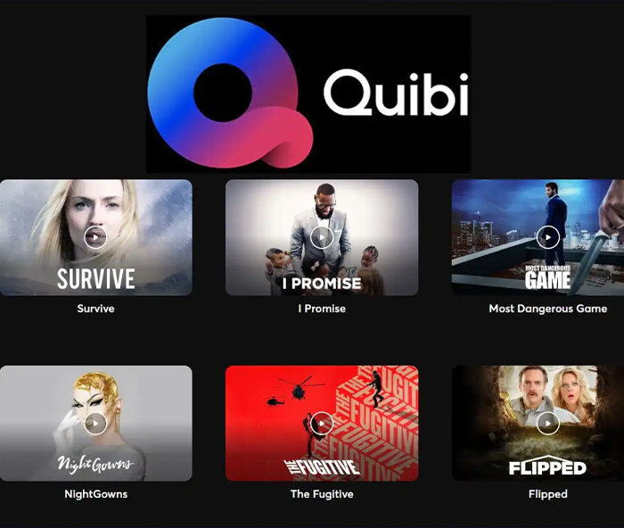

in the post-digital context:
This website is part of a academic project divided in three chapters, exploring basic concepts about visual narratives and their relationship with new media, considering their potential to deal with sociopolitical issues in a world where digital technology is present in our everyday lives.
Here you’ll find the links to the projects cited in the printed version, available on PDF, and some excerpts connecting them to the main text.
The three parts are:
I. the importance of visual narratives
II. living in the post-digital context
III. Sociopolitical challenges for new narratives.
read the book publication here (in PDF)
project made for the communication design masters degree of the university of fine arts lisbon. 2022.
I. narratives
—visual storytelling: the art and the technique (2010),
—visual storytelling: the art and the technique (2010),
[a] peteypedia, hbo/warner, 2019
—reinventing comics scott mccloud, 2000
II. post- digital
— beyond new media art domenico quaranta, 2014

[d] björk digital, bjork, 2017

[e] the promise, fallmouth university, 2019

III. sociopolitical challenges
— beyond new media art, domenico quaranta, 2014
[g] here, richard mcguire, 2014
— not art&tech, olia lialina, 2014

[h] ukraine war stories, starni games, 2022
— reinventing comics scott mccloud, 2000

[i] the remedy, daniel martín peixe, 2022.
— digital tartakovsky metahaven, 2019

[k] quibi, jeffrey katzenberg/meg whitman, 2020